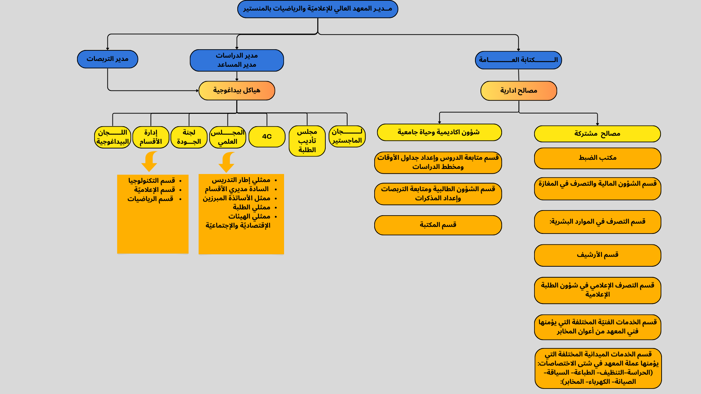

Le staff administrative de l'isimm
Le personnel administratif de l'ISIMM constitue l'épine dorsale de l'institution, travaillant de manière collaborative pour soutenir les objectifs éducatifs et opérationnels. Composé de professionnels dévoués occupant des postes clés tels que la direction, la scolarité, le guichet, les finances, et la bibliothèque, ce groupe assure la cohérence et l'efficacité des opérations au sein de l'université. Leur engagement quotidien contribue à créer un environnement propice à l'apprentissage et à la croissance académique des étudiants.

Direction
La direction de l'ISIMM incarne le leadership visionnaire et guide stratégiquement l'institution vers l'excellence académique. Responsable de la définition des objectifs globaux, de la prise de décision stratégique et de la promotion de la mission de l'ISIMM, la direction joue un rôle central dans la réalisation de la vision institutionnelle.


Scolarité
L'équipe de la scolarité joue un rôle essentiel en facilitant le parcours académique des étudiants. Responsable des questions liées aux programmes, aux inscriptions, et aux démarches administratives, l'équipe de la scolarité soutient les étudiants à chaque étape de leur formation.
Guichet
Le guichet de l'ISIMM est le point de contact central pour les questions administratives. De l'orientation des étudiants à la gestion des horaires et aux informations pratiques, l'équipe du guichet assure une communication fluide et efficace entre l'administration et les étudiants.
Finance
Le département financier est chargé de la gestion responsable des ressources financières de l'ISIMM. De la planification budgétaire à la comptabilité, cette équipe contribue à assurer la stabilité financière de l'institution, soutenant ainsi ses missions éducatives et ses projets.
Bibliothèque
La bibliothèque de l'ISIMM est bien plus qu'un lieu de stockage de livres. Dirigée par une équipe dédiée, elle offre un environnement propice à la recherche et à l'apprentissage. Cette équipe gère non seulement la collection de ressources, mais facilite également l'accès à des connaissances variées pour enrichir l'expérience académique des étudiants.